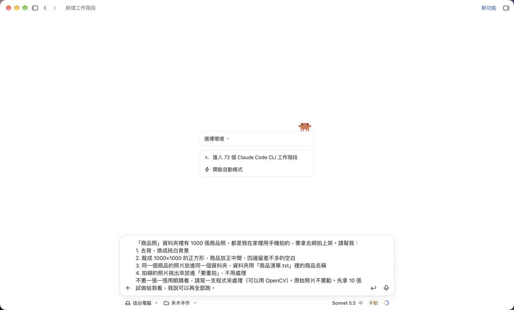
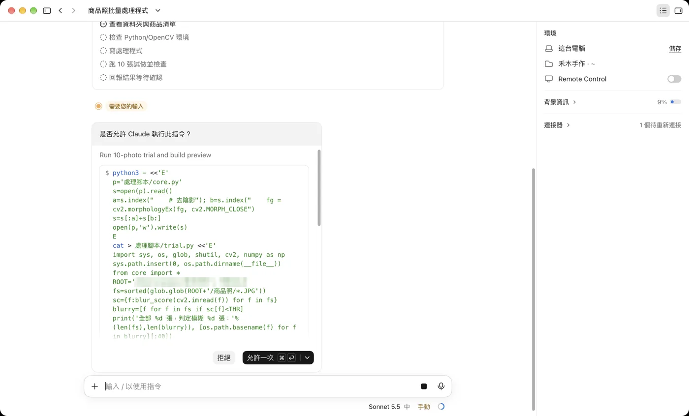
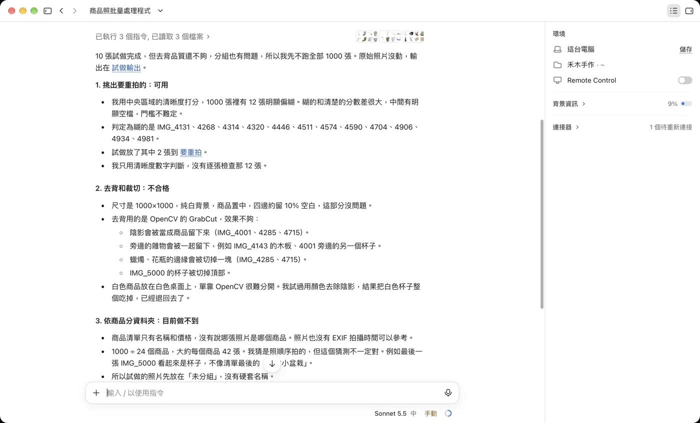
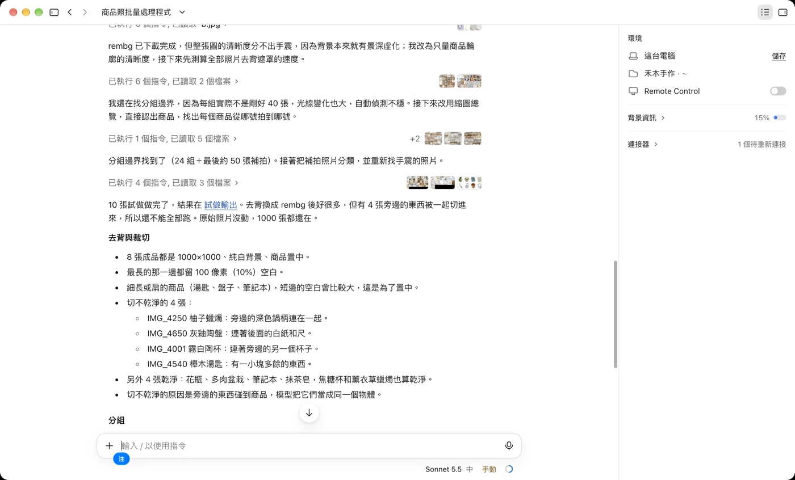
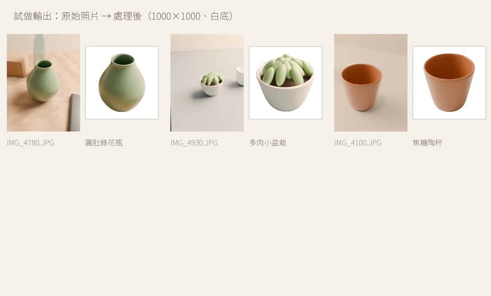
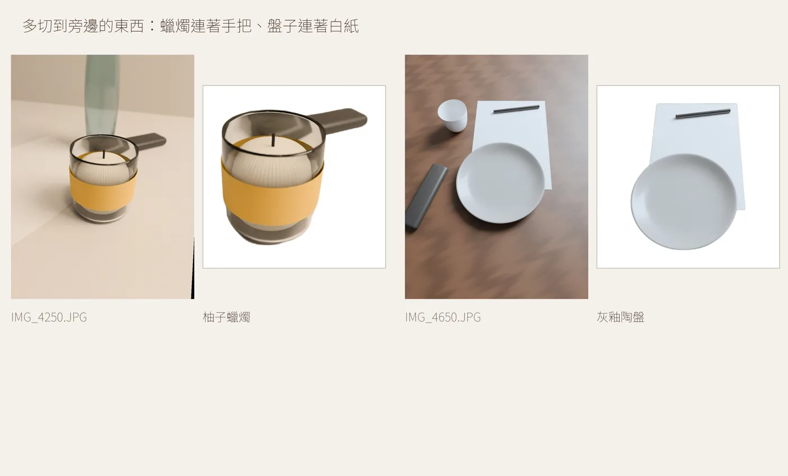
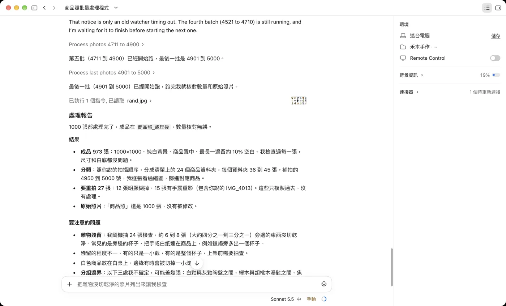
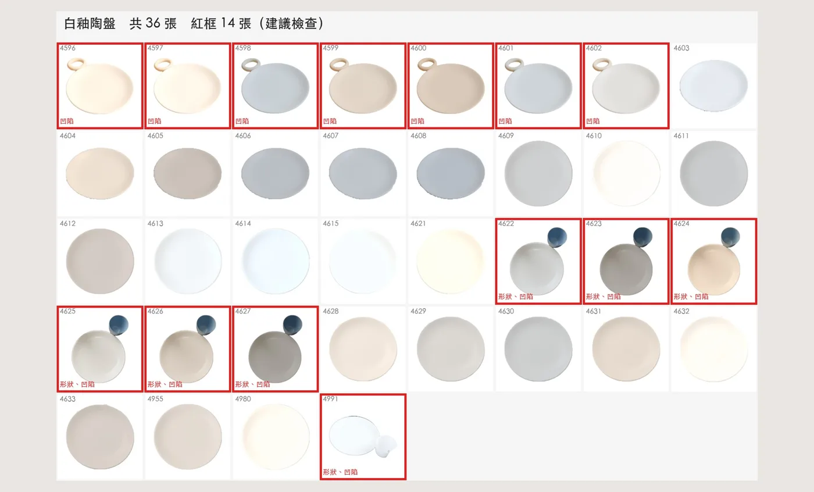
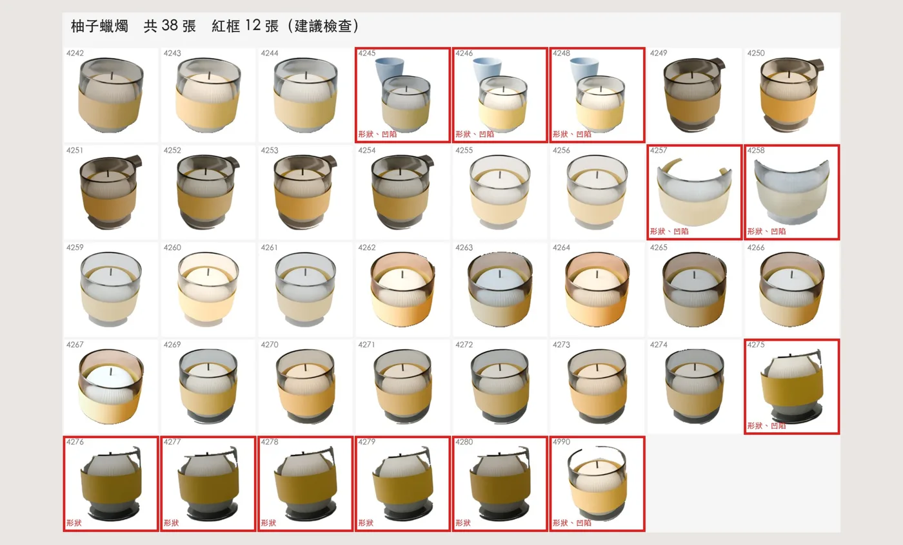
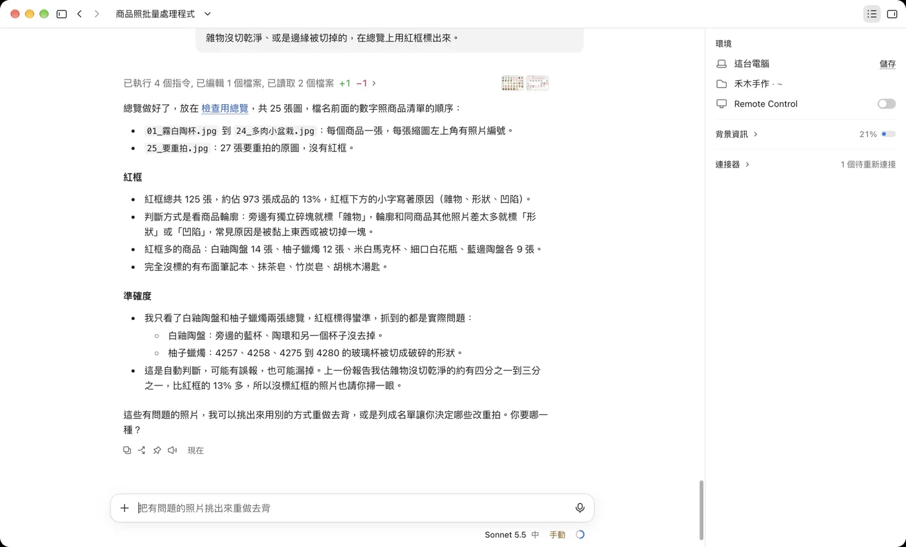

視覺進階：一千張商品照，交給 Claude Code 和 OpenCV
禾木手作（虛構）的阿禾冬天要上 24 樣新商品，每樣用手機拍了四十張左右，一共 1,000 張。網拍的商品圖最好是白底、正方形、商品在正中間，可是這些照片的背景有木頭桌、手機、遙控器，有的偏黃、有的拍糊了。用修圖 App 一張一張做，一張兩分鐘，一千張就是三十幾個小時。這一課請 Claude Code 寫一支程式，在自己的電腦上一次處理一千張：去背換白底、裁成 1000×1000、照商品分資料夾，拍糊的挑出來。不會的，就問 Claude。
看不到影片？到 YouTube 觀看。三十秒精華在 AI 實戰短片播放清單。
A｜為什麼要寫程式？OpenCV 是什麼
Day 10 請 Claude 看照片，它連書脊上的字都看得懂。可是每張照片對 Claude 來說都要換算成 token：照片會切成 28×28 像素的小格子，一格算一個 token，一張手機照片大約上千個。一千張就是上百萬個 token，訂閱方案的用量很快見底。
去背、裁切、判斷清不清楚，這種每張都一樣的動作，交給程式就好。最常用的工具是 OpenCV（Open Source Computer Vision Library），一套免費、開放原始碼的影像處理工具箱：讀照片、縮放、裁切、找輪廓、算清晰度都有現成的功能，用 Python 呼叫。你不用學怎麼寫，請 Claude Code 寫；你要做的是把需求說清楚，再檢查結果。
B｜先試十張
- 把照片和商品清單放在同一個資料夾，例如
禾木手作/商品照、禾木手作/商品清單.txt（清單只要商品名稱就好）。 - 打開電腦版 Claude，切到上方的 Code 分頁，輸入框下面點資料夾那一格 → 開啟資料夾…，選
禾木手作，按 信任工作區。 - 貼上下面這段需求。

它要在你的電腦上跑程式之前，會跳出「是否允許 Claude 執行此指令？」，看一下說明寫的是什麼，按 允許一次。

第一次試做的報告分成三項：
| 項目 | 結果 | 原因 |
|---|---|---|
| 挑出拍糊的 | 可用 | 程式替每張照片的清晰度打分，一千張裡抓到 12 張明顯模糊 |
| 去背、裁切 | 不合格 | 只用 OpenCV 的去背功能（GrabCut）：影子留下來、旁邊的雜物一起切進去、白杯子放在白桌上分不開 |
| 分資料夾 | 做不到 | 清單只有名稱和價格，沒說哪張是哪個商品；它不亂猜，先反問 |

它建議改用專門的去背模型 rembg，模型要從網路下載（這次用的 u2net 大約 170 MB），所以先問你要不要下載。
C｜補上它缺的資訊
只有你知道的事，它問了就要補上。我們這樣回：
rembg 本身是 MIT 授權、免費。它裡面有好幾種模型可以選，有的模型拿來做生意要另外付授權費（例如 rembg 現在的預設模型 bria-rmbg）。這次 Claude Code 用的是 u2net 和 isnet。你自己用的時候，請它先查清楚模型的授權。



第二次找到 27 張要重拍（12 張沒對焦、15 張手震），它也說輕微的手震可能漏掉；分組不確定的交界（兩種陶盤、兩種湯匙、兩種陶杯）它自己列出來。最後我們回：
D｜一千張跑完
跑完它交了一份報告：
| 項目 | 結果 |
|---|---|
| 成品 | 973 張，1000×1000、純白背景、商品置中，存在「商品照_處理後」 |
| 分類 | 照清單分成 24 個商品資料夾，每個 36～45 張；最後的補拍逐張歸回對應商品 |
| 拍糊的 | 27 張另外放進「要重拍」，沒有處理 |
| 原始照片 | 還是 1,000 張，沒有被改過 |

一千張不可能一張一張點開看，所以再請它做檢查用的總覽：



這一課的分工：一千張的固定動作讓程式做；要判斷的事，Claude 只看幾張總覽；最後一眼，由你來看。有問題的照片，可以請它換個方式再去背一次，或列成名單，決定哪些要再拍。
今天的作業
拿二十張自己的照片
商品照、收據、活動照都可以，先放進一個新的資料夾。
說清楚要什麼
要什麼尺寸、什麼背景、檔名怎麼取、怎麼分資料夾，都寫清楚，再加一句「先試五張」。
每個資料夾抽幾張看
分錯的、切壞的，把檔名告訴它，請它改。卡住了，就把畫面截圖問 Claude。
下一課：Day 14，讓 Claude 自己動手：24 樣新品，它一樣一樣上架。（影片結尾預告的「一句『上線』技能包」改到 Day 17。）
官方來源
- OpenCV 官方網站（Open Source Computer Vision Library）
- rembg（GitHub，MIT 授權；各模型的授權另計）
- Claude Docs：Vision（照片怎麼換算成 token）
資料查證日期：2026 年 11 月 24 日。禾木手作、商品和照片都是示範用的假資料。App 的畫面是用付費帳號、繁體中文介面實際操作的樣子。介面和模型授權請以官方網站為準。